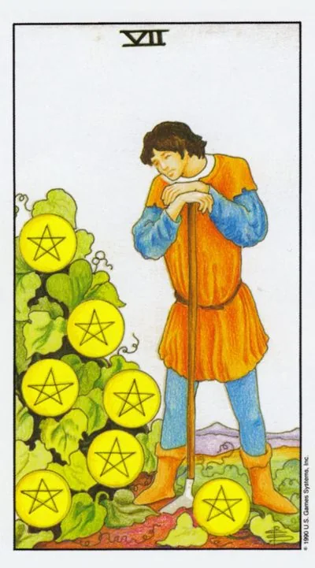

Младший аркан · Пентакли
VIIСемёрка пентаклей
Seven of Pentacles
Пауза перед урожаем: труд вложен, плоды наливаются, и всё, что требуется сейчас, — терпение, оценка и не выдёргивать ростки.
Архетип и основное значение
Огородник облокотился на мотыгу и смотрит на куст, увешанный шестью плодами; седьмой внизу только раскрылся. Работы на грядке сделано много, но урожай ещё не снят — между трудом и результатом лежит время, которое нельзя ускорить никаким усердием. Семёрка пентаклей — карта стратегической паузы: оценить, дождаться, дозреть самому.
Сатурн в Тельце даёт вкус медленного времени: рост меряется сезонами, не днями. Юная энергия торопит сорвать и подсчитать; зрелая умеет стоять, опираясь на мотыгу, зная, что ожидание — тоже работа. Второй сюжет карты — ревизия: решить честно, что доращивать, а что выкопать ради нового посева.
В быту
Домашние вложения зреют: ремонт почти закончен, сбережения подрастают, ребёнок крепнет в успехах. Действий требуется немного: проверяйте полив, а не пересаживайте дерево каждую неделю. Дневник прогресса успокоит нетерпеливый ум фактами пройденного пути.
Работа и карьера
В работе стадия ожидания отдачи: проект отправлен клиенту, инвестиция работает, заявка рассматривается. Не дёргайте процесс уточнениями каждые сутки — результаты придут по своему расписанию. Параллельно проведите трезвую ревизию: какие усилия окупаются, какие тянут силы впустую. Спокойное стратегическое решение дороже срочных телодвижений.
Отношения
Отношения в фазе выращивания: вкладываете внимание и терпение, а мгновенного отклика нет. Не требуйте урожай через неделю после посева — доверие растёт медленно. Но если сеете только вы, взгляните на грядку честно: растёт ли там что-нибудь вообще?
Здоровье
Телу нужно время: результаты тренировок проявятся через недели, лечение набирает силу постепенно. Главный враг — нетерпение, толкающее удваивать нагрузки и бросать курсы на середине. Продолжайте в режиме умеренности и регулярности с контрольными точками раз в месяц: здоровье — самая долгосрочная ваша инвестиция.
Эзотерическое значение
Сатурн в Тельце — время, вросшее в материю: тайна вызревания, знакомая аграрным культам как священное ожидание. Намерение, посеянное в правильный час, растёт само — не дёргайте его проверками. Ритуал семёрки — ревизия посевов при полной луне: посмотреть, поблагодарить, выбрать, чему дать второй сезон.
Нетерпение губит посевы: усилий много, отдачи мало, и рука уже тянется выкопать то, что следовало бы дорастить.
Архетип и основное значение
Садовник бросил мотыгу и ушёл с поля — обидевшись на медленные плоды или рыть новый участок, не сняв урожай со старого. Перевёрнутая семёрка — разорванный цикл: труд был, результата нет, потому что ожидание оборвалось на середине или усилия изначально шли в истощённую почву.
Два характерных сценария. Нетерпеливый: смена направления при каждом замедлении, и ни один посев не доживает до урожая. Усталый: годы вкладов в дело или отношения, которые не собирались плодоносить, а признать страшно. Оба лечит честный учёт: цифры вложенного и выросшего вернут ясность лучше эмоций.
В быту
Домашние проекты буксуют: начатое месяцами висит недоделанным, деньги, отложенные на цель, растаскиваются мелочами, результата не видно нигде. Причина чаще не в проклятии, а в отсутствии системы. Выберите один процесс, доведите до конца и зафиксируйте результат — привычка завершать важнее вдохновения, которым вы пытаетесь её заменить.
Работа и карьера
Вложения не окупаются: проект съедает часы, зарплата стоит на месте, обучение не ведёт к повышению. Возможны и свои ошибки управления — ресурсы не туда, вечная шлифовка вместо выпуска продукта. Не бросайте всё: пересчитайте, что имеет перспективу, а что — красивая трата жизни.
Отношения
В отношениях чувство вклада без отдачи: вы водите на ужины, помните даты, а в ответ тишина или потребительский тон. Нетерпение толкает к ультиматумам, усталость — к ледяному безразличию, обе крайности губительны. Спокойный разговор о том, что каждый кладёт в общую грядку, полезнее бурных сцен и молчаливого счёта обид.
Здоровье
Быстрые схемы проваливаются: чудо-диета не держится, абонемент сгорает, курс витаминов брошен на треть. Разочарование в медленной медицине опаснее самой медлительности. Вернитесь к скучной основе — сон, шаги, вода, плановый визит к врачу — и дайте этому три месяца: организм отвечает тем, кто не бросает его на середине.
Эзотерическое значение
Перевёрнутый Сатурн в Тельце — время, вышедшее из повиновения: намерения гниют в земле от избытка проверок или недостатка веры. Магическая традиция видела здесь урок незрелого посева: желания, брошенные от скуки, без цены и срока, не прорастают. Практика исправления — пересмотр обетов: допишите срок, плату и критерий результата целям, которые хотите всерьёз.
🌿 Как школа читает этот ранг
Основная идея
Результат труда уже есть, но ещё не пришло время окончательно им воспользоваться. Работа сделана — теперь наступает ожидание.
Как проявляется
В работе — здоровый ритм усилий и отдыха. В деньгах — заработанное ещё не пришло в окончательную точку. В отношениях — периодичность и спокойная пауза.
Теневая сторона
Человек продолжает работать там, где ему уже пора остановиться и выдохнуть.
Ключевые слова
ожидание · отдых · ритм · урожай · пауза
📜 Развёрнуто — из лекции по рангу
Суть карты
закономерный результат приложенного труда: «основная работа сделана честно, осталось дождаться, когда виноград зреет» — плоды вкушаются лишь на девятке. Отсюда легитимный отдых: «бог на седьмой день решил ничего не делать, потому что и так много всё успел».
Прямое положение
- Работа: эффективность — «сколько знаков в минуту печатаешь без ошибок»; войти в недельный рабочий ритм, чередовать напряжение и паузы; удовольствие от погружённой работы придёт на восьмёрке.
- Финансы: заработано многое, пользоваться рановато — «месяц закончился, зарплата будет седьмого числа», квартальный отчёт сдан — премии ждать.
- Отношения: пауза и периодичность хорошего; на физическом уровне (секс для пентаклей — материальный аспект отношений) результат достигнут и устраивает; иногда показывает беременность.
- Саморазвитие: важнейшая карта для людей земли — трудоголиков, забывающих отдыхать.
Негативное значение
• придётся делать перерыв — результат есть, но не устраивает («сажали помидоры, вырос кабачок — как ни крути, помидорами не станет»); совет мастера-ювелира: не выходит — отложи работу, выдохни, вернись; «довёл до постели, но не до удовлетворения»; без отдыха — угроза физическому здоровью (единственная тема здоровья в лекции).
Акценты и фишки школы
- Астрологии у семёрок нет вовсе: привязок к Зодиаку и домам здесь нет (единственное слово «астрологический» — про чужую колоду Мадара); колесо Зодиака — прерогатива старших арканов.
- «Славянского ряда» в привычном смысле нет — фольклор сведён к русской пословичной семантике множества; плюс пятница как день Венеры и Афродиты, где труднее не поддаться лени («семь пятниц на неделе» — о кормящем завтраками).
- Средневековая реалия: выходной в неделю был один — база сюжета про отказ работать в седьмой день.
- Кино и культура: «Одиннадцать друзей Оушена» и «Бумажный дом» как благородные семёрки мечей, моргающие рамочки Остапа Бендера (воображаемое будущее), «Мастер и Маргарита» (героям нужна тишина и спокойствие), песня «нормальные герои всегда идут в обход», Сократ: «чем больше я знаю, тем лучше понимаю, как мало я знаю».
- Полемика с книгами: современная литература по Таро — перепаковка («возьми чужие значения, заверни в другие слова — книжка готова»); копируют у Кроули и Банцхафа; самого Банцхафа он одобряет — «на начальном этапе заходит идеально, простой и доступный язык», хотя старшие арканы по большому мифу там не разобраны; Ошо Дзен для него — маркетинг вокруг имени автора.
- Практика: новичкам пять лет работать прямыми и перевёрнутыми («пересядьте с механики на автомат»); негатив прямой карты читают по соседям и интуиции.
- Значения строятся от прогрессии ряда: пятёрка → шестёрка → семёрка, с анонсом восьмёрки (удовольствие от работы / уход без нужного кубка).
Ключевые слова
много результатов труда; урожай не созрел; пауза и передышка; «зарплата седьмого числа»; соразмерь усилия.